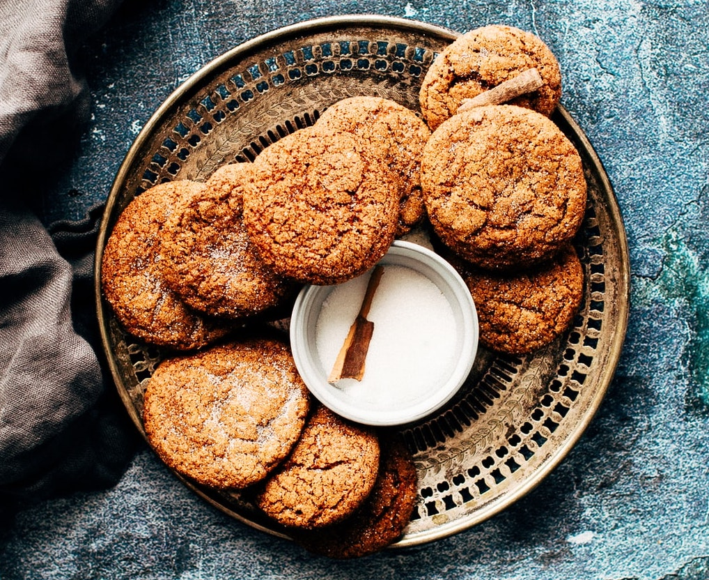

This is a family recipe that for years was kept on a scrap of paper tucked away in an old recipe book at my mother's house. The recipe came from an old neighbour of hers on the Kilcorig Road and has been improved on by my mother, Clare.